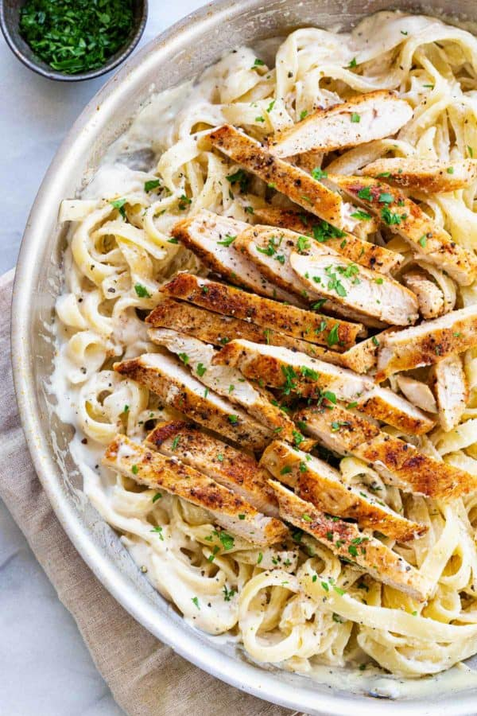

Chicken Alfredo

Description
Chicken alfredo is an italian classic, comprised of
a creamy white sauce along with long strands of pasta, mixed with
tender chicken, it's a home favorite!
Ingredients
- 1lb boneless skinless chicken breast
- 3 teaspoons kosher salt, divided
- 3/4 teaspoons black pepper, divided
- 1/4 teaspoons paprika
- 1 tablespoon olive oil
- 3 quarts water
- 8 ounces fettucine, or equivalent
- 2 teaspoons minced garlic
- 2 tablespoons unsalted butter
- 1 1/2 cup heavy cream
- 1 cup grated parmesan cheese, or parmigiani reggiano
- 1/8 teaspoon nutmeg
- 1 tablespoon chopped parsley
Steps
Chicken
- Cut each chicken breast in half lengthwise to create two cutlets, four total.
- In a small bowl combine 1 teaspoon salt, ¼ teaspoon pepper, and paprika. Evenly season both sides of the chicken with the spice mixture.
- Heat a large skillet over medium heat. Once the pan is hot, add the olive oil. Add the chicken and cook until the surface is browned, about 5 for 6 minutes. Flip and cook until the internal temperature reaches 160 to 165ºF (71 to 74ºC), about 5 to 7 minutes.
- Transfer to a plate and cover with foil to keep warm. Wash and dry the pan to use for making the alfredo sauce.
Pasta
- In a large pot, bring 3 quarts of water to a boil. Add 1 ½ teaspoon salt, stir to dissolve.
- Add the pasta and cook until al dente, about 10 to 12 minutes, or according to the manufacturer's directions. Use tongs to transfer to a colander—Reserve the starchy pasta water. While the pasta cooks, make the alfredo sauce.
Alfredo Sauce
- Heat a large skillet over medium-low heat. Add butter. Once melted, add garlic and saute until fragrant, 30 to 60 seconds. Do not brown the butter or garlic.
- Add the heavy cream, ½ teaspoon salt, and ½ teaspoon pepper, stir to combine. Bring the cream to a simmer over medium heat. Cook, frequently stirring, scraping the sides and bottom of the pan to make sure the cream does not curdle.
- Reduce the sauce to about 1 cup, 10 to 12 minutes. It should be slightly thickened and be able to coat the back of a spoon.
- Turn off the heat and stir in the parmesan cheese and nutmeg. If the sauce is too thick, add water or cream. Add 1 tablespoon at a time until you reach the desired consistency—season with salt and pepper to taste.